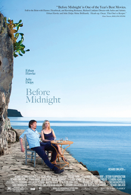

Before Midnight is a 2013 American romantic drama film directed by Richard Linklater, who co-wrote the screenplay with Ethan Hawke and Julie Delpy. The sequel to Before Sunrise (1995) and Before Sunset (2004), it is the third installment in the Before trilogy. The film follows Jesse (Hawke) and Céline (Delpy), now a couple, as they spend a summer vacation in Greece with their children.
Linklater, Hawke, and Delpy began developing a third film in 2011, wishing to replicate the nine-year gap between the first two installments. Principal photography began in August 2012, and took place entirely on the Peloponnese coast in Southern Greece, including the Kardamyli home once owned by author Patrick Leigh Fermor. Like its predecessors, Before Midnight has a minimal plot, with considerable screentime devoted to extended conversations between the characters.